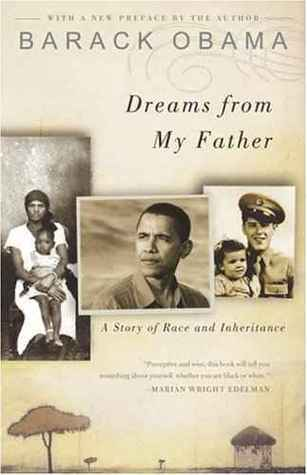

This past year I took a trip to Las Vegas as part of my friend's bachelor party. It was my first time on the "West Coast" in a long time and I had a great time. I thoroughly enjoyed eating In N Out Burger and seeing the many different casinos.
My favorite restaurant in the Boston area is Sun Kong. I think it has the best dim sum at an affordable price compared to other restaurants in the area. While there may be a line, I think it is worth the wait.
My favorite food is Pho, which a Vietnamese soup dish conmposed of broth, rice noodles, vegetables, and meat. I think it is a great comfort food and I enjoy eating it on cold and warm days.
| Book Name | Cover | Author | Summary |
|---|---|---|---|
| East of Eden | |
John Steinbeck | East of Eden is a retelling of the Book of Genesis. Adam Trask's two sons Cal and Aaron grapple with love, lonelines, and the struggle between good and evil. |
| Leaves of Grass | |
Walt Whitman | Leaves of Grass is a poetry collection about the celebration of life and nature. It speaks on human nature and feeling and it's relation to the physical world. |
| The Kite Runner | |
Khaled Hosseini | The Kite Runner tells the story of Amir, who chases his father's love and attention. Eventually, his chase leads him back to Afghanistan, where he must face his past and the consequences of his actions. |
| Dreams from My Father: A Story of Race and Inheritance |  | Barack Obama | Dreams from My Father is a memoir about finding meaning in life as a black American. From a Hawaii to Indonesia, from LA to NY, Obama's life of obliqueness leads him to Kansas and Kenya in search of self-discovery and reconciliation. |